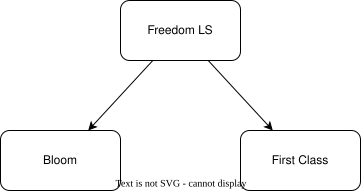

Powering up Django development with Claude Code
Powering up Django development with Claude Code
LLMs
Powering up Django software development with Claude Code
LLMs
AI Fatigue
- Deluge of new tools and techniques
- "Influencers" with epic results and fancy tools
- Feeling behind is normal
- When you try to get LLMs to help you, they often underperform
- Not clear where to start
I'll share
- A structured way to build up LLM-code-gen capabilities
- The trajectory matters more than the final config
Hi, I'm Sheena
🧗♀️🏕️🧭🇿🇦🖊️🛠️🔥🐕🎸👩🏻💻 🧑🏫📐
- Coding since young teen
- Mostly worked as a software engineer + lead
-
Spent the last 6 years in tech education
- science of ed => engineering
of ed
- Founded Prelude.tech
- Founded Guild of Educators
- PyCon Africa 2025 Chair
- Python Software Foundation Director
Can't we just use {plugin}?
eg: superpowers, spec-kit, etc
- Prompts are already defined
- Agents, workflows, hooks... all the batteries!
- Lots of contributors
- Using the latest features
Your code gen setup depends on
Your project's needs
Does this sound like you?
"It's alright if a bug goes to production. We'll fix it when we see it... Maybe"
How about this?
"OMG, people could die"
Not all projects require the same level of trust!
The cost of software?
- Initial build 💸💸
- Lifetime 💸💸💸💸💸
The cost of software?
- Initial build with LLM 💸
- Lifetime 💸💸💸💸💸💸💸💸💸💸
But LLMs will get better...
- Messy code => messy context
- Unclear intentions => bad decisions
- Some projects just don't work if the code is 🍝
- That is your risk to take. Your responsibility
Your stack matters!
- Different structures
- Different idioms
- Different best practices
Case Study: Freedom LS
- LMS = Learner Management System
- What if we treat the learners and teachers as first class citizens?
- Learner experience should depend on what you are trying to teach
What is it
- Django project
- Can be used as standalone LMS
- Designed to be included in other Django projects
- Hyper customizable
- Wagtail versus Wordpress
Concrete implementations

Quality targets
- FLS needs to be easy to extend => Well structured, clear
- Changes to FLS effect all concrete implementations => bugs have a blast radius
- Regulations and privacy concerns => highly secure
- Goal is to have a long-lived project => maintainability matters
How to build LLM capabilities
- Figure out how much trust and maintainability you need
The power of diminishing returns
Small improvement chance of success on small task
=> Exponential improvement in multi-step tasks
It's problems all the way down
How to build LLM capabilities
- Figure out how much trust and maintainability you need
- Get small things right (your kind of right)
- Get big things right
- Get big things right efficiently
Getting small things right
- Use better models
- Scaffolding => more likely to be correct on first try
- Validation => More able to self-correct
Get small things right
Perfectly normal guardrails
- Unit tests
- Linting
- Type checks
- Git!!!!
Get small things right
Claude.md, Agents.md, etc.md
- claude init ❌ Don't do it! ❌
- When in doubt, leave it out. Only non-obvious stuff
- Heavy docs go in skills
- Insist on using skills. Tell it again and again
Get small things right
Work interactively
- Take the robot by the hand...
- Refine your md as you go
- Learn about context pollution
- Use /clear a LOT
- Be explicit about what skills to use
- Make little helper commands
Get big things right
- Break the big thing into small things
- Get the small things right
Get big things right
- Figure out what the big thing is
- Break the big thing into small things
- Get the small things right
Get big things right
Make a plan
- The creator of Claude code swears by plan mode
- Leave out details
- Hard to edit after the fact
- No hard record
- Personally: spec driven development
- Progressive refinement of requirements => find "assumptions"
- Codify a workflow
- Get inspired by superpowers, etc
My Spec DD
Idea.md
- Created by a human
- Loose, high level
/improve_idea (optional)
My Spec DD
Spec.md
/spec_from_idea
- Must ask questions
- Explain decisions made
- Success criteria
- Format: Nothing fancy
- Read it and make sure I'm happy
/spec_review
My Spec DD
Plan.md & Frontend_QA.md
/plan_from_spec
- First pass: just plan (look at code, ask questions, output tasks)
- Second pass: For each task, mention necessary skills
- Make a frontend QA plan if there are frontend effects
- Brief Review
My Spec DD
Writing the code
-
/implement_plan
- Break tasks into batches
- Batches executed by subagents
- Run tests
- Separate agent for code review
My Spec DD
QA report.md (with pictures)
/do_qa
- Playwright MCP
- Executed on multiple screen sizes
- Takes screenshots
- Relies on helper agent for data setup
- Generates a report
My Spec DD
Pull Request
- Final Review on Github
- Easy to see changes + track what I've seen
- Make quick fixes
- Any major problems => I messed up a few steps back
Tips
- /clear between each step
- Commit often
- Roll back if there wre big assumptions. The earlier you fix it the better
- Be aware of context! Sub-agents are helpful